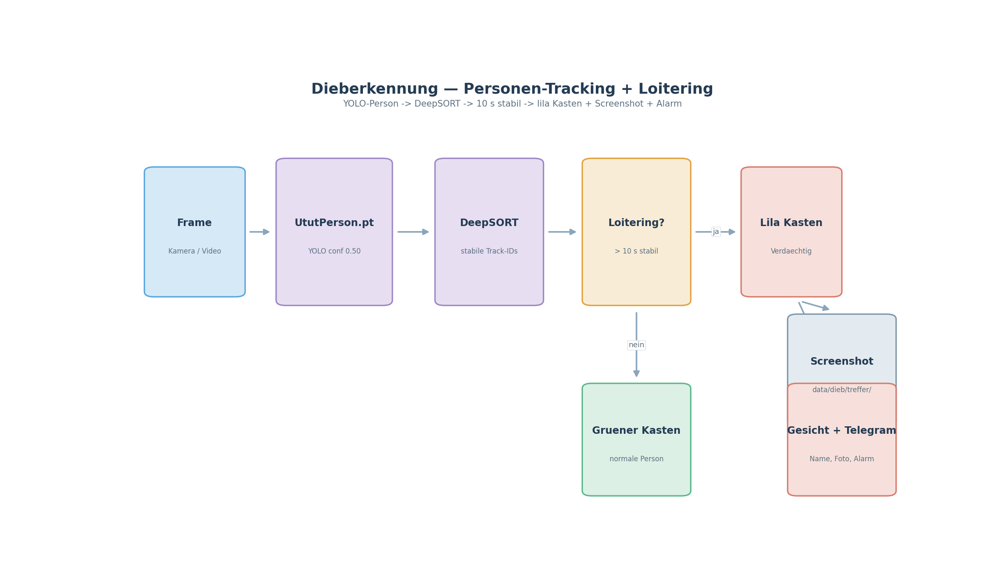
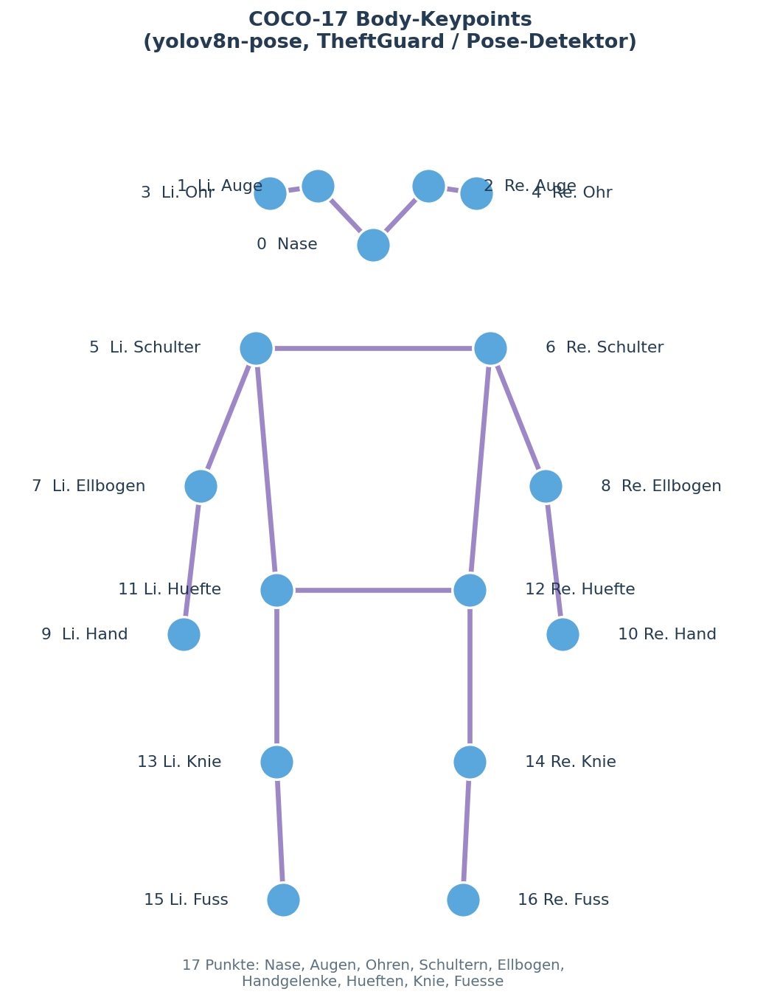

UtutCam — Dieberkennung (Shoplifting / Ladendiebstahl)¶
1. Überblick¶
Die Dieberkennung beobachtet Personen im Video und schlägt Alarm, wenn jemand auffällig lange an einem Ort bleibt oder ein möglicher Diebstahl-Vorgang erkannt wird. Grundlage sind zwei Neurale Netze: ein Personendetektor (UtutPerson.pt, Colab-trainiert) mit DeepSORT-Tracking und optional ein Posen-Modell (yolov8n-pose), das typische Dieb-Bewegungen (Gegenstand abdecken, Kasse anfassen) bewertet.
Personen im Video ──► YOLO (UtutPerson) + DeepSORT ──► Track pro Person
│ loitering_threshold überschritten (10 s)
▼
[Dieb verdächtig] ──► lila Kasten + Screenshot + optional Gesicht-Check + Telegram

Simulation: dieb_simulation.mp4
(32 s) — echte Aufnahme aus dieb_erkennung/output/: eine Person, die lange an
einem Ort verweilt, wird über Loitering erkannt und als Verdächtiger
(Loitering-Kasten) markiert.
2. Startbefehle¶
Alle Skripte laufen vom Projektstamm
C:\Users\youss\Desktop\UtutCamaus.
2.1 über die Web-App¶
cd C:\Users\youss\Desktop\UtutCam
C:\Users\youss\AppData\Local\Python\pythoncore-3.14-64\python.exe web_app\server.py
Browser: http://localhost:5000 → Seite Dieb_Erkennung. Der
DiebWorker-Thread läuft dort automatisch.
2.2 Einzelmodul testen (Python-API)¶
from dieb_erkennung.detector import ShopliftingDetector
det = ShopliftingDetector() # Standard-Konfiguration
verdacht = det.detect_all(frame) # verarbeitet einen Frame
3. Wie es funktioniert¶
3.1 ShopliftingDetector (dieb_erkennung/detector.py)¶
Kernklasse mit folgenden Schritten pro Frame:
- Personen erkennen:
YOLO(UtutPerson.pt)mitconf=0.50,imgsz=640. Nur Klasse 0 (person), gefiltert nachmin_box_area=3000undmin_height_ratio=0.08. - Tracking:
DeepSort(max_age=50)vergibt stabile Track-IDs, damit jede Person einzeln verfolgt wird. - Loitering-Erkennung: Sind die x-Koordinaten einer Person länger als
loitering_threshold=10.0Sekunden stabil (sie bleibt an einer Stelle), wird sie zum Verdächtigen → Kasten lila (255,0,255). - Optional beim Verdacht:
- Gesicht prüfen: Person in der Gesichtsdatenbank suchen
(
face_erkennung) → wenn bekannt, Name mitschicken (_identify). - Screenshot: Trefferbild nach
data/dieb/treffer/speichern. - Telegram-Alarm: Foto + Name/Text per
TelegramNotifier(Cooldown 60 s).
Normale Personen erhalten einen grünen Kasten, Verdächtige lila.
3.2 theftguard.py + pose_detector.py¶
TheftDetectionnutztyolov8n.pt+yolov8n-pose.ptauf Diebstahl-Klassen (Gegenstände:[24,25,26,28,39,40,41,42,43,67,73–79]). Erkannte Objekte werden mit deutschen Namen angezeigt (ITEM_NAMES_DE).- Die Verdachts-DB liegt unter
data/dieb/diebe.json(THIEF_MATCH_THRESHOLD=0.40).
3.3 Posen-/Bewegungs-Bewertung (COCO-17-Keypoints)¶
Das Posen-Modell (yolov8n-pose) zeichnet pro Person ein Skelett aus
17 Keypoints — Nase, Augen, Ohren, Schultern, Ellbogen, Handgelenke,
Hüften, Knie und Füße:

Aus diesen 17 Punkten wird eine Geste abgeleitet (_gesture_score in
dieb_erkennung/pose_detector.py):
- Kopf gesenkt (Nase unterhalb der Schulterlinie) → +1
- Hände unterhalb der Hüftlinie (je Handgelenk) → +1 je Hand
Erreicht eine Person genügend Gesture-Frames über ein Zeitfenster
(gesture_frames_threshold=12), wird sie wie beim Loitering als Dieb
eingestuft — typische Ladebewegung „Gegenstand abdecken / in die Hosentasche
stecken". Das Skelett wird live als lila (Verdacht) bzw. grüner Linienzug im
Video gezeichnet (_draw_pose).
4. Konfiguration¶
| Parameter | Standard | Bedeutung |
|---|---|---|
conf |
0.50 |
Person-Konfidenz |
loitering_threshold |
10.0 s |
Verweildauer bis Verdacht |
gesture_frames_threshold |
12 |
Gesture-Frames (Pose) bis Verdacht |
imgsz |
640 |
Modell-Eingabe |
min_box_area |
3000 |
zu kleine Boxen ignorieren |
min_height_ratio |
0.08 |
Personen müssen 8% der Bildhöhe sein |
face_check |
True |
Gesicht bei Verdacht in DB suchen |
notify_cooldown |
60.0 s |
min. Abstand zwischen Telegram-Alarmen |
5. Modelle¶
waffen_erkennung/models/UtutPerson.pt— Personen-Detektor (Colab)dieb_erkennung/models/yolov8n.pt— Objekt-Detektor (Gegenstände)dieb_erkennung/models/yolov8n-pose.pt— Pose-Modell (Bewegung)
6. Verwandte Dateien¶
dieb_erkennung/detector.py— ShopliftingDetector (Hauptmodul)dieb_erkennung/theftguard.py— Gegenstands/Diebstahls-Erkennungdieb_erkennung/pose_detector.py— Pose-basierte Warnungweb_app/server.py— DiebWorker im Webdata/dieb/— Screenshots (treffer/) + Verdachts-DB